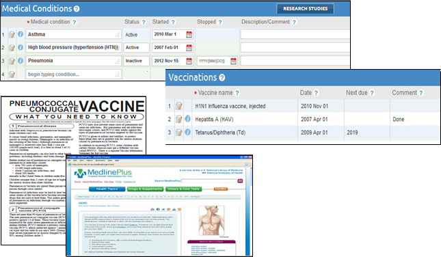

Chapter 4
4. The PHR Health Record Details Page
Using the PHR’s Health Record Details page, you can enter information about health conditions, surgeries, medications, allergies, and vaccinations. You can also enter due dates for doctor’s appointments, medication refills, and tests and procedures, and create custom due date reminders.
The information buttons to the left of each row provide links to trusted educational resources, such as NLM MedlinePlus and CDC vaccine information sheets.
The Health Record Details page uses the individual’s demographic data (age, gender) to display fields for entering appropriate preventive screening results. For example, women in certain age groups have a place to enter mammogram and Pap smear results, while both men and women have a section for colon cancer screening and only men have prostate screening results.